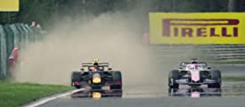

Formula 1: Drive to Survive
Dokumentarna serija koja prati FIA Formula 1 svjetsko prvenstvo kroz više sezona
Zvijezde Valterri Bottas Will Buxton Pierre Gasly
Kreator: James Gay-Rees
Radnja serije: Od producenta Amy i Senna ova serija ide korak dalje u svijet Formule 1 dok se susrećemo sa porodicama, timovima i vozačima iza vizira u ovom ekskluzivnom dokumentarcu Formule 1: Drive to Survive.
Najbolje ocjenjene epizode

S2.E6 Raging Bulls
Alex Albon, najnoviji vozač Red Bull tima, želi ostvariti ono što vozači prije njega nisu uspjeli, na Belgiskom grand prixu došlo je do katastrofe
8.8
S2.E10 Checkered Flag
Pierre Gaslyijev i Alex Albonov drugi dio sezone.
8.4
S3.E1 Redemption
Na prestižnom Monaco grand prixu, Ricciardo ima veliki pritisak, a team Williams bori se za opstanak.
8.4